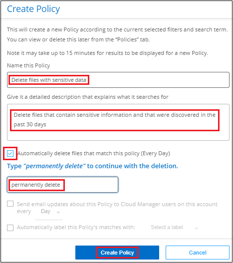

릴리스 정보
릴리스 정보
데이터에 정책을 할당합니다
 변경 제안
변경 제안
정책은 자주 요청하는 규정 준수 쿼리에 대한 조사 페이지에 검색 결과를 제공하는 사용자 지정 필터의 즐겨찾기 목록과 같습니다. BlueXP 분류는 일반적인 고객 요청에 따라 미리 정의된 정책 집합을 제공합니다. 조직에 특정한 검색 결과를 제공하는 사용자 지정 정책을 만들 수 있습니다.
정책은 다음과 같은 기능을 제공합니다.
-
사전 정의된 정책 구성하는 방법에 대해 설명합니다
-
고유한 사용자 지정 정책을 만들 수 있습니다
-
클릭 한 번으로 정책의 결과가 포함된 조사 페이지를 시작합니다
-
특정 중요 정책이 결과를 반환하면 데이터를 보호하기 위한 알림을 받을 수 있도록 BlueXP 사용자 또는 기타 전자 메일 주소로 전자 메일 알림을 보냅니다
-
AIP(Azure Information Protection) 레이블을 정책에 정의된 조건과 일치하는 모든 파일에 자동으로 할당합니다
-
특정 정책이 결과를 반환하면 데이터를 자동으로 보호할 수 있도록 파일을 자동으로 삭제합니다(하루에 한 번)
Compliance Dashboard의 * Policies * 탭에는 이 BlueXP 분류 인스턴스에서 사용할 수 있는 사전 정의된 정책과 사용자 지정 정책이 모두 나열됩니다.

또한 조사 페이지의 필터 목록에 정책이 표시됩니다.
조사 페이지에서 정책 결과를 봅니다
조사 페이지에 정책의 결과를 표시하려면 을 클릭합니다  단추를 클릭하여 특정 정책을 선택한 다음 * 결과 조사 * 를 선택합니다.
단추를 클릭하여 특정 정책을 선택한 다음 * 결과 조사 * 를 선택합니다.

사용자 지정 정책을 만듭니다
조직에 맞는 검색 결과를 제공하는 사용자 지정 정책을 만들 수 있습니다. 검색 기준과 일치하는 모든 파일 및 디렉토리(공유 및 폴더)에 대한 결과가 반환됩니다.
정책 결과에 따라 데이터를 삭제하고 AIP 레이블을 할당하는 작업은 파일에만 유효합니다. 검색 기준과 일치하는 디렉토리는 자동으로 삭제하거나 할당 AIP 레이블을 지정할 수 없습니다.
-
데이터 조사 페이지에서 사용할 필터를 모두 선택하여 검색을 정의합니다. 을 참조하십시오 "데이터 조사 페이지의 데이터 필터링" 를 참조하십시오.
-
원하는 방식으로 모든 필터 특성을 찾은 후 * 이 검색에서 정책 생성 * 을 클릭합니다.

-
정책의 이름을 지정하고 정책에서 수행할 수 있는 다른 작업을 선택합니다.
-
고유한 이름과 설명을 입력합니다.
-
필요한 경우 정책 매개 변수와 일치하는 파일을 자동으로 삭제하려면 확인란을 선택합니다. 에 대해 자세히 알아보십시오 정책을 사용하여 소스 파일을 삭제하는 중입니다.
-
필요에 따라 계정의 BlueXP 사용자에게 알림 이메일을 보내려면 확인란을 선택하고 이메일을 보낼 간격을 선택합니다. 에 대해 자세히 알아보십시오 정책 결과에 따라 이메일 알림을 보냅니다.
-
필요에 따라 다른 사용자에게 알림 이메일을 보내려면 확인란을 선택하고 최대 20개의 이메일 주소를 입력한 다음 이메일을 보낼 간격을 선택합니다.
-
필요한 경우 정책 매개 변수와 일치하는 파일에 AIP 레이블을 자동으로 할당하려면 확인란을 선택하고 레이블을 선택합니다. (이미 AIP 레이블을 통합한 경우에만 해당됩니다. 에 대해 자세히 알아보십시오 "AIP 레이블"참조)
-
Create Policy * 를 클릭합니다.

-
새 정책이 정책 탭에 나타납니다.
비준수 데이터가 발견되면 이메일 알림을 보냅니다
BlueXP 분류는 특정 중요 정책이 결과를 반환할 때 계정의 BlueXP 사용자에게 이메일 경고를 보내 데이터를 보호할 수 있도록 알림을 받을 수 있습니다. 매일, 매주 또는 매월 이메일 알림을 보내도록 선택할 수 있습니다. 또한 BlueXP 계정이 아닌 최대 20개의 전자 메일 주소로 다른 전자 메일 주소로 전자 메일 알림을 보내도록 선택할 수 있습니다.
정책을 만들거나 정책을 편집할 때 이 설정을 구성할 수 있습니다.
기존 정책에 전자 메일 업데이트를 추가하려면 다음 단계를 따릅니다.
-
정책 목록 페이지에서 이메일 설정을 추가(또는 변경)할 정책에 대해 * 편집 * 을 클릭합니다.

-
정책 편집 페이지에서 다음을 수행합니다.
-
BlueXP 계정의 사용자에게 알림 이메일을 보내려면 "이 계정의 모든 사용자에게 이메일 보내기" 확인란을 선택하고 이메일을 보낼 간격을 선택합니다(예: * 매일 *).
-
추가 사용자에게 알림 이메일을 보내려면 "이메일 보내기" 확인란을 선택하고 이메일 발송 간격을 선택한 후 최대 20개의 이메일 주소를 입력합니다.

-
-
정책 저장 * 을 클릭하면 이메일이 전송되는 간격이 정책 설명에 표시됩니다.
정책의 결과가 있는 경우 첫 번째 이메일이 전송되지만 정책 기준을 충족하는 파일이 있는 경우에만 전송됩니다. 알림 이메일에는 개인 정보가 전송되지 않습니다. 이메일에는 정책 기준과 일치하는 파일이 있으며 정책 결과에 대한 링크가 표시됩니다.
정책을 사용하여 소스 파일을 자동으로 삭제합니다
사용자 지정 정책을 만들어 정책과 일치하는 파일을 삭제할 수 있습니다. 예를 들어, 지난 30일 동안 BlueXP 분류에서 발견된 중요한 정보가 포함된 파일을 삭제할 수 있습니다.
계정 관리자만 파일을 자동으로 삭제하는 정책을 만들 수 있습니다.

|
정책과 일치하는 모든 파일이 하루에 한 번 영구적으로 삭제됩니다. |
-
데이터 조사 페이지에서 사용할 필터를 모두 선택하여 검색을 정의합니다. 을 참조하십시오 "데이터 조사 페이지의 데이터 필터링" 를 참조하십시오.
-
원하는 방식으로 모든 필터 특성을 찾은 후 * 이 검색에서 정책 생성 * 을 클릭합니다.
-
정책의 이름을 지정하고 정책에서 수행할 수 있는 다른 작업을 선택합니다.
-
고유한 이름과 설명을 입력합니다.
-
"이 정책과 일치하는 파일을 자동으로 삭제" 확인란을 선택하고 * 영구적으로 삭제 * 를 입력하여 이 정책에 따라 파일을 영구적으로 삭제할 것인지 확인합니다.
-
Create Policy * 를 클릭합니다.

-
새 정책이 정책 탭에 나타납니다. 정책과 일치하는 파일은 정책이 실행될 때 하루에 한 번 삭제됩니다.
에서 삭제된 파일 목록을 볼 수 있습니다 "작업 상태 창".
정책을 사용하여 AIP 레이블을 자동으로 할당합니다
정책 기준을 충족하는 모든 파일에 AIP 레이블을 할당할 수 있습니다. 정책을 생성할 때 AIP 레이블을 지정하거나 정책을 편집할 때 레이블을 추가할 수 있습니다.
BlueXP 분류에서 파일을 검사하면 파일에 레이블이 계속 추가되거나 업데이트됩니다.
레이블이 파일에 이미 적용되었는지 여부와 레이블의 분류 수준에 따라 레이블을 변경할 때 다음 작업이 수행됩니다.
| 파일이… | 그러면… |
|---|---|
레이블이 없습니다 |
라벨이 추가됩니다 |
낮은 수준의 분류에 대한 기존 레이블이 있습니다 |
더 높은 수준의 라벨이 추가됩니다 |
더 높은 수준의 분류에 대한 기존 레이블이 있습니다 |
더 높은 수준의 레이블이 유지됩니다 |
는 수동으로 또는 정책에 의해 레이블이 할당됩니다 |
더 높은 수준의 라벨이 추가됩니다 |
는 두 정책에 의해 두 개의 서로 다른 레이블을 할당합니다 |
더 높은 수준의 라벨이 추가됩니다 |
기존 정책에 AIP 레이블을 추가하려면 다음 단계를 따르십시오.
-
정책 목록 페이지에서 AIP 레이블을 추가하거나 변경할 정책에 대해 * 편집 * 을 클릭합니다.

-
정책 편집 페이지에서 확인란을 선택하여 정책 매개 변수와 일치하는 파일에 대해 자동 레이블을 활성화하고 레이블을 선택합니다(예: * General *).

-
Save Policy * 를 클릭하면 Policy 설명에 레이블이 표시됩니다.
|
|
정책이 레이블로 구성되었지만 이후에 AIP에서 레이블이 제거된 경우 레이블 이름은 OFF로 설정되고 레이블은 더 이상 할당되지 않습니다. |
정책을 편집합니다
이전에 만든 기존 정책의 조건을 수정할 수 있습니다. 이 기능은 특정 매개 변수를 추가하거나 제거하기 위해 쿼리(필터를 사용하여 정의한 항목)를 변경하려는 경우에 특히 유용합니다.
사전 정의된 정책의 경우 이메일 알림의 전송 여부와 AIP 레이블 추가 여부만 수정할 수 있습니다. 다른 값은 변경할 수 없습니다.
-
정책 목록 페이지에서 변경할 정책에 대해 * 편집 * 을 클릭합니다.

-
이 페이지의 항목(이름, 설명, 이메일 알림 전송 여부 및 AIP 레이블 추가 여부)만 변경하려면 변경하고 * 정책 저장 * 을 클릭합니다.
저장된 쿼리의 필터를 변경하려면 * 쿼리 편집 * 을 클릭합니다.

-
해당 쿼리를 정의하는 조사 페이지에서 필터를 추가, 제거 또는 사용자 지정하여 쿼리를 편집하고 * 변경 내용 저장 * 을 클릭합니다.

정책이 즉시 변경됩니다. 이메일을 보내거나 AIP 레이블을 추가하거나 파일을 삭제하기 위해 해당 정책에 정의된 모든 작업은 다음 내부에서도 수행됩니다.
정책을 삭제합니다
사용자 지정 정책이 더 이상 필요하지 않은 경우 만든 모든 사용자 지정 정책을 삭제할 수 있습니다. 미리 정의된 정책은 삭제할 수 없습니다.
정책을 삭제하려면 를 클릭합니다 특정 정책의 버튼 * 정책 삭제 * 를 클릭한 다음 확인 대화 상자에서 * 정책 삭제 * 를 다시 클릭합니다.
사전 정의된 정책 목록입니다
BlueXP 분류는 다음과 같은 시스템 정의 정책을 제공합니다.
| 이름 | 설명 | 논리 |
|---|---|---|
S3 공개된 프라이빗 데이터 |
S3 개인 정보 또는 민감한 개인 정보가 포함된 개체(공개 공개 공개 공개 공개 읽기 액세스 포함). |
S3 공용 및 개인 정보 또는 민감한 개인 정보 포함 |
PCI DSS - 30일 이상 오래된 데이터 |
신용 카드 정보가 포함된 파일로, 30일 전에 마지막으로 수정되었습니다. |
신용 카드가 포함되어 있으며 30일 동안 마지막으로 수정한 것입니다 |
HIPAA - 30일 이상 오래된 데이터 |
30일 전에 마지막으로 수정된 상태 정보가 포함된 파일 |
건강 데이터(HIPAA 보고서와 같은 방식으로 정의) 및 30일 동안 마지막으로 수정된 상태 데이터가 포함됩니다 |
프라이빗 데이터가 7년 이상 오래되었습니다 |
7년 전에 마지막으로 수정한 개인 정보 또는 민감한 개인 정보가 포함된 파일 |
7년 전에 마지막으로 수정한 개인 정보 또는 민감한 개인 정보가 포함된 파일 |
GDPR - 유럽 시민 |
EU 국가의 시민권자 5명 이상의 ID가 포함된 파일 또는 EU 국가의 시민을 나타내는 ID가 포함된 DB 테이블. |
EU 국가 또는 DB 테이블의 5개 이상의 식별자를 포함하는 파일(한 국가의 EU 식별자와 함께 열 15% 이상 포함). (유럽 국가의 국가 식별자 중 하나. 브라질, 캘리포니아, 미국 SSN, 이스라엘, 남아프리카 제외) |
CCPA - 캘리포니아 주민 |
이 식별자가 포함된 10개 이상의 California Driver의 라이센스 식별자 또는 DB 테이블을 포함하는 파일입니다. |
캘리포니아 드라이버 라이센스가 포함된 10개 이상의 캘리포니아 드라이버 라이센스 식별자 또는 DB 테이블이 포함된 파일 |
데이터 주체 이름 - 높은 위험 |
데이터 주체 이름이 50개 이상인 파일 |
데이터 주체 이름이 50개 이상인 파일 |
이메일 주소 - 높은 위험 |
이메일 주소가 50개 이상인 파일 또는 이메일 주소가 포함된 행의 50% 이상이 있는 DB 열 |
이메일 주소가 50개 이상인 파일 또는 이메일 주소가 포함된 행의 50% 이상이 있는 DB 열 |
개인 데이터 - 높은 위험 |
개인 데이터 식별자가 20개가 넘는 파일 또는 개인 데이터 식별자가 포함된 행의 50% 이상이 포함된 DB 열 |
20개가 넘는 개인 파일 또는 개인 행이 50% 이상 포함된 DB 열 |
민감한 개인 데이터 - 높은 위험 |
중요한 개인 데이터 식별자가 20개가 넘는 파일 또는 중요한 개인 데이터가 포함된 행의 50% 이상이 포함된 DB 열 |
20개 이상의 민감한 개인 파일이 있는 파일 또는 중요한 개인 정보가 포함된 행의 50% 이상이 있는 DB 열 |